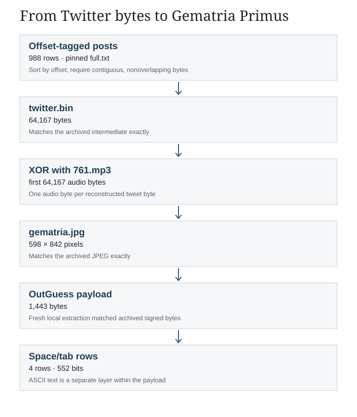
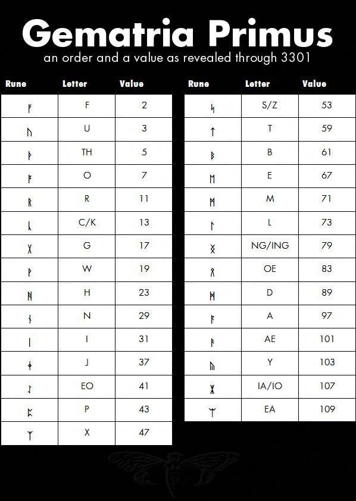

2013: from Twitter offsets to Gematria Primus
Reassemble 988 offset-tagged records, XOR the audio bytes, and extract the signed whitespace message.
On this page
The 2013 puzzle reached Gematria Primus through a byte reconstruction, not through a rune cipher. An archived account of the Twitter stage preserves offset-tagged hex strings, the assembled byte stream, its JPEG result and the extracted hidden message. We rebuilt each transformation from those preserved files. This verifies the archived byte path; it does not reconstruct the entire live Twitter feed.

1. Put the offset records in byte order
The archived full.txt has 988 records of the form offset: hexadecimal bytes. The offset is hexadecimal too. The dump runs in descending order, so its first line is not the beginning of the file. Sort numerically by offset, decode each hex string and place its bytes at that offset. The rows cover offsets 0 through 64,166 with no gaps or overlaps. Their 64,167-byte concatenation matches the archived twitter.bin byte for byte.
This matters because joining lines in their printed order, treating offsets as decimal, or padding an apparent gap would change every later result. The replay report records the row count, offset coverage and source hashes; the source manifest pins the upstream Git revision and exact files.
2. XOR the stream with the start of the audio file
The archived disk-image inventory includes 761.mp3. For byte position i from 0 through 64,166, compute twitter.bin[i] XOR 761.mp3[i]. Only the first 64,167 bytes of the 4,010,732-byte MP3 are used. The output exactly matches the archive’s 64,167-byte gematria.jpg; its SHA-256 is d4736b09cfac03097efcb5c2f48ffc71f46700835fc09f7549283956580eb35d. A JPEG header check gives 598 × 842 pixels.
Download 761.mp3 · Download the exact reconstructed JPEG. These files are preserved as bytes, not recompressed for display.


3. Extract the concealed signed text
A fresh outguess -r gematria.jpg extracted.asc run recovered 1,443 bytes. They match the archive’s gematria.jpg.asc exactly. The run reported seed 17; the retest receipt records the executable, input and output hashes. OutGuess is a separate layer from the audio XOR. Our byte check does not verify the PGP signature attached to the extracted text.

Four nonempty rows of the payload contain only spaces and tabs. Reading a space as 0 and a tab as 1, then grouping every eight bits as an ASCII byte, yields:
Come to emiwp4muu2ktwknf.onion We shall await you there. Good luck. 3301
The four rows contain 240, 200, 80 and 32 bits respectively. The address is a historical output of this reconstruction, not a link to a service we contacted.
Reproduce and inspect the limits
Download the reference-data bundle, extract it, and run python scripts/replay_2013_twitter.py --check. It verifies the five source files against both SHA-256 and their pinned Git blob hashes, checks row coverage, reassembles the byte stream, repeats the XOR and decodes the whitespace message. Run python scripts/test_replay_2013_twitter.py for an independent byte-by-byte assembly and reverse-XOR check. If you have OutGuess, add --outguess path/to/outguess to the first command to re-extract and compare the hidden payload.
Replay script · Independent checker · Machine-readable result. The archive, rather than a captured live 2013 feed, is the input to these checks. The result shows how this copy of the Gematria table was produced and how its hidden message was read; it does not establish how the feed was populated in real time, authenticate the signed message, or imply a key for the unsolved Liber Primus pages.